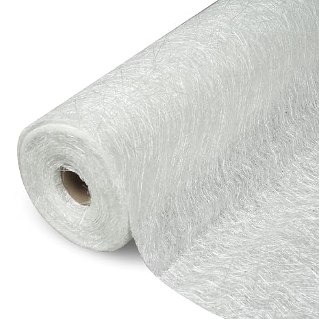
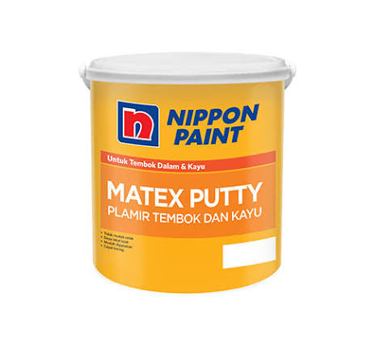
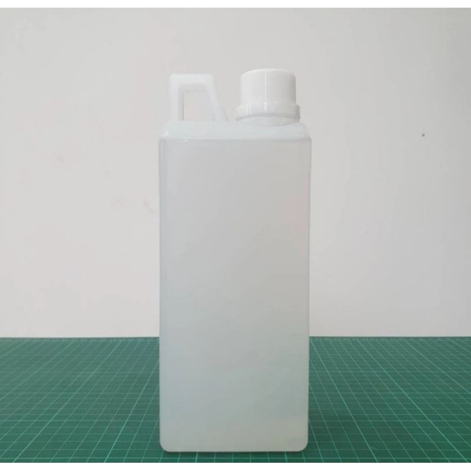
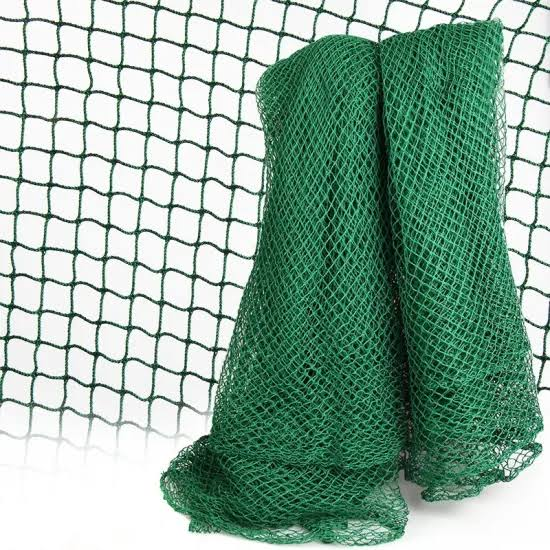

Komponen Elektro

GPS U-blox Neo 6M V2

TS9 Antenna Spiral 7dBi
4G LTE 3G WCDMA GSM
3G 2.4G Kabel 5 meter

SIM800L GSM/GPRS

RTC (Real Time Clock) DS3231

Solar Panel Lipat 15W FlexSolar E15 USB Charger
Monocrystalline Waterproof
IP67 Portable
Komponen Mekanik
Resin

Fiberglass

Dempul

Katalis

Tali Tambang

Jaring
Informasi Komponen
Klik gambar komponen untuk melihat spesifikasi yang digunakan.